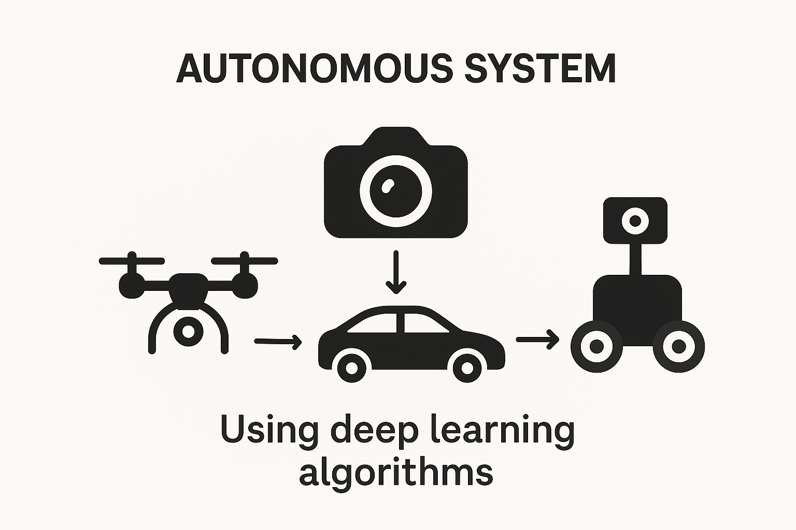
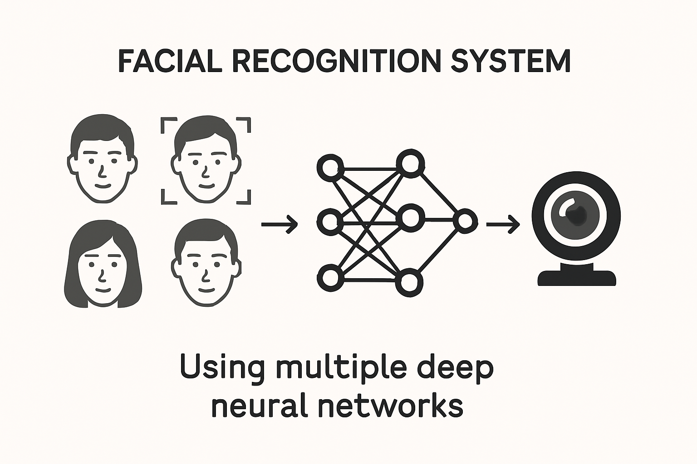
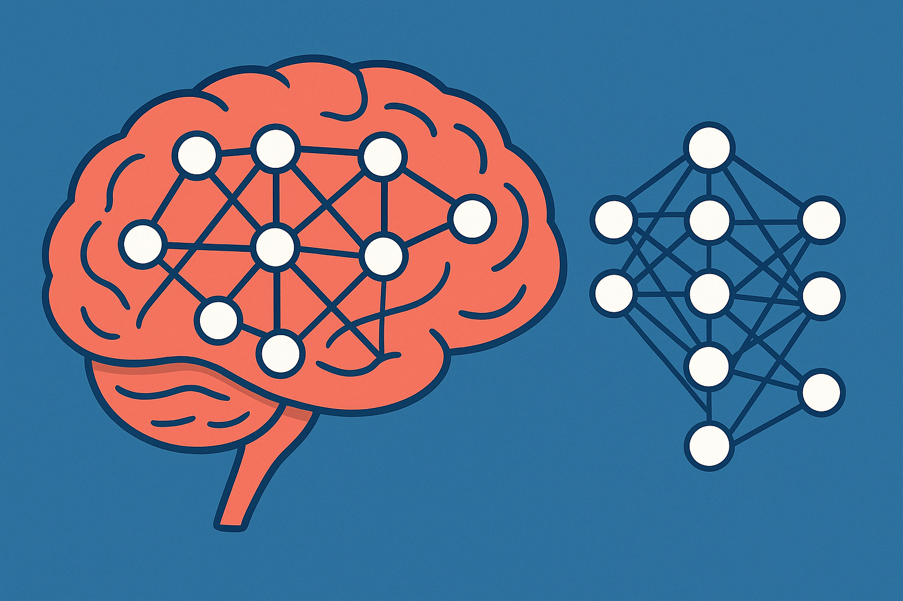

Deep Learning & Computer Vision Projects
Computer Vision-based Autonomous Systems (Ongoing)
I am developing a computer vision-based autonomous system for drones, small test cars, and mobile robots using deep learning algorithms.
AI-Deep Learning for Climate Change Prediction (Ongoing)

In correlation with another project, I am working with different models (LSTM, GRU, and CNN for now) to predict climate change using various datasets, including some from NASA, made from real-life data. My goal is to compare these models.
AI-Remotely Operated Climate Computing Network Systems (Ongoing)

I built an environmental sensor system using Arduino Uno, SCD40 Sensor, and PMSA003I Sensor to measure temperature, humidity, particle size & conctration, and the concentration of carbon dioxide gases in an environment.
I will be integrating more sensors to the system to measure the concentration of other greenhouse gases (ozone, sulfur dioxide, and other gases). After that, I will connect the system to a remote, so the system can be controlled from anywhere using the remote.
I will also be using a deep neural network to make predictions based on the readings gotten from the sensors.
Lastly, when the system is complete, I will make a website that can collect the readings from the systems to show live data-feed.
Facial Recognition Project

I used multiple deep neural networks to create a facial recognition system that can detect and recognize a person's face from among a set of faces in an image, a video, or in real-time using a webcam.
Right now, I am using multiple models to detect brain tumors from MRI scans.
Deep Learning Classification Project
As a final project for my Deep Learning course, I trained a pretrained convolutional neural network (CNN) to classify roundworms into "alive" or "dead". I also tested the model's performance on a separate test set and evaluated its accuracy. I used MATLAB and its Deep Learning Toolbox to implement the project.